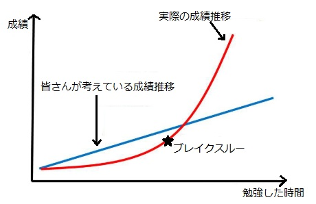

YouTubeチャンネル
Profile
偏差値４０からの冒険
勉強動画をYouTubeで配信
開発者についてと同じように今回も質問形式で私のチャンネルについて書きます
質問ありがとうございます😊
遡ること１年前(2021年)、私は正直腐ってました。
これじゃだめだ、何かしないと!!と思ってYouTubeで調べていたら河野玄斗さんという長時間勉強配信をされているYouTuberを発見しました。
それを見ていて河野さんは、なんでこんなにも勉強していられるのかという質問に対し、"それはYouTubeで配信をすることによってみんなからの監視の目があるからだ"とおっしゃっていました。
それを聞いて私は、あ、そっか自分もYouTubeによる監視の目があれば勉強を効率よく捗らせることが出来るかも!!と思い、このチャンネルを作ったという理由です。
勉強を始めて最初はあまり成績は上がりませんでしたが、勉強する回数や量を積み重ねることによって少しずつ成績が上がってゆき、今年(2022)の８月からだんだんと目にわかるぐらいのび、今年の10月(2022)の模試で偏差値が60を超えるぐらいに上がりました。
なので、私があの時このチャンネルを作っててよかったととても強く思っています😌
👇河野玄斗さんのYouTubeサイトはこちらから
質問ありがとうございます😊
このチャンネルの名前は実はそのままで、この作った当時の偏差値が40でそこからどんどんと成績を上げていくぞ🔥!!という思いで作りました。
ちなみに偏差値４０からの冒険の意味は、偏差値４０からはそのままなんですが、冒険は何事にもチャレンジして頑張るぞ💪という意味です。
私の実際の成績の伸び方。ちなみに縦が偏差値、横が勉強期間(12ヶ月見たいな)
引用元:https://www.takeda.tv/mizonokuchi/advice/post-122935/
質問ありがとうございます😊
今の所その予定はありません🥲
よろしくお願いします😌
質問ありがとうございます😊
今の所予定がないので、出来るところまでしようと思います😊
よろしくお願いします😌